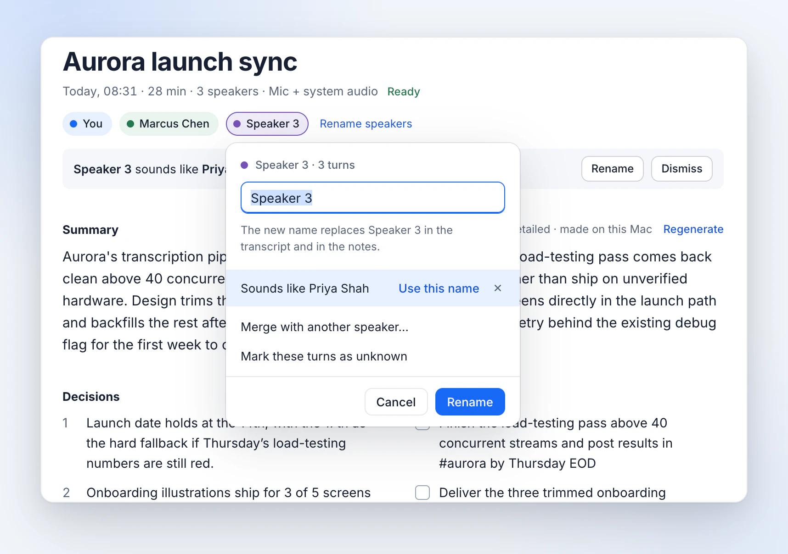
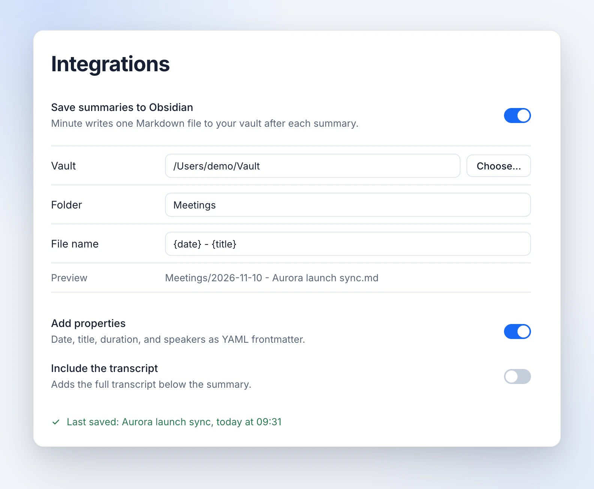

Live transcript as people speak
Whisper runs on your Mac and keeps pace with the conversation. Click a timestamp to play that moment.

Free, offline AI note taker for macOS
Minute records your call, transcribes it, and writes the summary on your own machine. No account. No bot in the call. Open source.
Version 1.14.0 · Signed and notarized by Apple · macOS 11 or later

Works with the call apps you already use. No bot joins.
Minute notices the meeting, offers to record, and shows the transcript as people speak. When the call ends, the notes are already written.
Minute records your microphone and, on macOS 13 or later, the call's system audio. That is how it hears the other people. Nobody sees a new participant, and nobody has to let one in.
System audio needs the Screen Recording permission. Without it, Minute records your microphone only. Meeting detection covers Zoom, Microsoft Teams, Webex, Slack, FaceTime, Discord, and browser calls such as Google Meet.

That's the whole list. Turn off Wi-Fi and everything still works.
This website counts visits with Plausible, which uses no cookies. The Minute app has no analytics at all.
| Network ledger | What happens |
|---|---|
| Your audio | Never sent |
| Your transcripts and notes | Never sent |
| Analytics or telemetry in the app | None |
| Model download | Once, on first use |
| Update check against GitHub | Optional, can be switched off |
Every step runs on your Mac: recording, transcription, the summary, and your questions.
Whisper runs on your Mac and keeps pace with the conversation. Click a timestamp to play that moment.
Minute works out who said what, and can remember the voices you name.

Written by a local language model when the call ends.
Ask any meeting a question. Each answer cites the moment it was said, and a click on the time jumps there.

Minute offers to record when a call starts and to stop when it ends. It is off by default.

Save each summary to your vault, or export any note as Markdown.

Whisper in 99 languages, and a summary model that fits your Mac's memory.

Granola Business is $14 per user per month. Otter Pro lists at $16.99.
Minute MIT licensed
$0 No account. No trial.
| Feature | Minute | Granola | Otter |
|---|---|---|---|
| Price | Free | Basic $0. Business $14 per user per month. | Basic free. Pro $16.99 per user per month. |
| Free plan limits | None | 30 days of history | 300 minutes a month, 30 per conversation |
| Transcription | On your Mac | In the cloud | In Otter's cloud |
| A bot joins the call | No | No | Yes, on Zoom, Teams, and Meet |
Checked on 10 November 2026 against granola.ai/pricing, granola.ai/security, and otter.ai/pricing.
Minute as a Granola alternative Minute as an Otter alternative
Yes. Minute is free and open source, and it needs no account.
Yes. After you download the models once, Minute records, transcribes, summarizes, and answers questions with Wi-Fi turned off. It goes online only to download a model, to list models, and to check for an update. You can turn off the update check in Settings.
No. Minute records on your Mac. It captures your microphone and, on macOS 13 or later, the system audio, so it hears the other people on the call without joining it. Meeting detection covers Zoom, Teams, Webex, Slack, FaceTime, Discord, and calls in a browser, such as Google Meet.
Minute needs macOS 11 or later. System audio needs macOS 13 or later and the Screen Recording permission. To notice that a call ended while the meeting app stays open, Minute needs macOS 14.2 or later. Apple silicon is the tested target. The Intel build is not yet tested on real Intel hardware, and the large Whisper models need Apple silicon. The smaller models need 8 GB of memory, the larger ones 16 GB.
Yes. Choose your vault folder in Settings, and Minute writes a Markdown file each time a summary finishes. It can add the date, title, duration, and speakers as properties. Without Obsidian, export any note as Markdown.
Yes. The code is on GitHub under the MIT license, and each release is signed and notarized by Apple.
Minute is a Rust app with whisper.cpp and llama.cpp compiled in, running on Metal. It has no Electron and no Python runtime. Notes are plain text and WAV files in a folder you own.
Granola and Otter transcribe in the cloud, and Otter's assistant joins Zoom, Teams, and Google Meet calls. Minute writes the transcript and the summary on your Mac, with no bot. Read how Minute compares as a Granola alternative and as an Otter alternative, including when each of those apps is the better choice.
Minute is the free, offline AI note taker for macOS.
Version 1.14.0 · Signed and notarized by Apple · macOS 11 or later